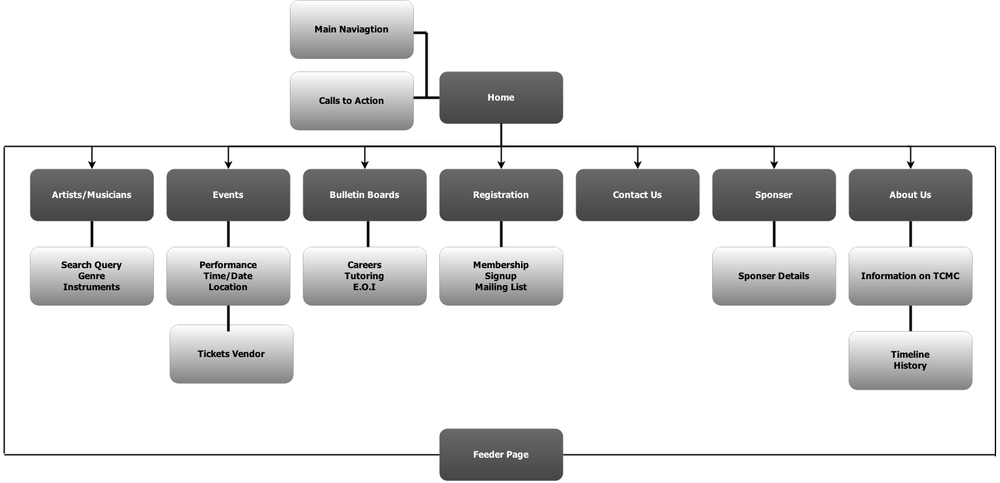

Members:
Joshua Christensen
Robert Warnest
Noel Chiller-Roberts
Dean Fabris
David Brumby
The main goal of redesigning this site is to sell event/concert tickets and get people in the seats. Secondary goals include memberships, engaging the public, creating a platform for musicians abroad to connect with TCMC, generate volunteers, and to raise awareness of the TCMC in the community.
The success of the website depends largely on whether it meets the goals set out by the client, that is, does the website:
The demographic of our target audience are aged between 17 - 34. According to the Australian Bureau of Statistics this age group spends the most time online compared to any other age bracket. We will design with this audience in mind by having a website that is accessible on modern devices (phone, tablet) that uses big buttons as links for the touch screen enviroment. More ways we are designing with this user in mind is by adding links to social media.
HOME
Home page contains links to other pages as well as calls to action.
ARTISTS/MUSICIANS
Contains information on artists that have performed for TCMC or are featured artists of TCMC.
EVENTS
The events page contains news about upcoming concerts/performances.
BULLETIN BOARDS
Contains information for job opportunities, music lessons and expressions of interest for volunteer positions.
REGISTRATION
The page for membership registration and the mailing list signup.
CONTACT US
Contact information for the TCMC.
SPONSERS
Sponsor details of the entities that support the TCMC.
ABOUT US
The history and timeline of TCMC. What the TCMC does in the music community.
